LLMO対策会社おすすめ10選｜失敗しない選び方と比較ポイントを解説

LLMO対策を外注したいと考えたとき、どの会社に依頼すべきか迷う担当者は多いはずです。ただし、価格や知名度だけで依頼先を選ぶと、記事制作だけで終わってしまったり、必要な改善が支援範囲に含まれていなかったりして、思うように成果につながらないこともあります。
本記事では、LLMO対策の基本を踏まえつつ、LLMO対策会社の選び方を整理したうえで、おすすめの会社、依頼するメリット、注意点、比較時のチェックポイントまでわかりやすく解説します。これからLLMO対策を始めたい方や、失敗しにくい依頼先を探したい方は、ぜひ参考にしてください。
目次

LLMO対策会社の選び方
LLMO対策会社を選ぶときは、料金や知名度だけで比較しないことが大切です。AIに見つけられやすく、引用されやすく、比較検討の流れの中で選ばれやすい状態をつくるには、記事、サービスページ、FAQ、会社情報、導線設計、確認作業まで含めて考える必要があります。
まずは失敗しにくい会社選びのポイントを整理します。
記事制作だけで終わらない会社を選ぶ
LLMO対策でよくある失敗は、記事制作だけが先行してしまうことです。たしかに、比較記事や用語解説記事を増やすことは重要です。ただし、AIに自社名やサービス名を出してもらいたいなら、記事の周辺にある情報まで含めて整っていなければ、情報のつながりが弱くなりやすいです。
たとえば、記事で興味を持った人がサービスページに移動したときに、何をしてくれる会社なのか、どんな企業に向いているのか、料金の考え方はどうか、といった情報が不足していると、比較検討の段階で離脱されやすくなります。記事制作だけで終わらず、全体導線まで見てくれる会社を選びましょう。
サービスページやFAQまで見てくれる会社を選ぶ
LLMO対策では、サービスページやFAQの整備も重要です。記事は新規接点をつくる役割がありますが、サービスページは「何を提供している会社なのか」を明確に伝える役割があります。FAQは、料金、対応範囲、向いている会社、進め方など、比較検討時に生まれやすい疑問を先回りして補足できます。
記事だけでなく、最低限のFAQ整理や会社情報の見直しまで見てくれる会社のほうが、施策全体のバランスを取りやすくなります。特に、既存サイトに情報不足がある会社ほど、記事制作より先に土台の整理が必要な場合があります。
AIでの出現確認や引用確認を行う会社を選ぶ
LLMO対策は、実施した施策がAI上でどう見えているかを確認しながら進めることが重要です。記事を公開しただけで終わりではなく、ChatGPTやGoogleのAI機能、Perplexityなどで、自社名や関連テーマがどのように扱われているかを見る必要があります。
ここで確認したいのは、単に出現するかどうかだけではありません。どのページが参照されているのか、競合と比べてどの情報が足りないのか、引用される情報の粒度は適切か、といった点まで見られる会社のほうが改善精度は上がります。公開後の確認作業を支援範囲に含めている会社は候補に入れやすいです。
料金と作業範囲が明確な会社を選ぶ
LLMO対策会社を選ぶときは、月額料金だけで判断しないことが大切です。同じ価格帯でも、会社によって含まれる作業は大きく異なります。記事制作が中心なのか、構成案だけなのか、既存ページの改善提案があるのか、確認作業まで含むのかによって、実際の価値は変わります。
そのため、契約前には「何を、どこまで、どの頻度で対応するのか」を具体的に確認する必要があります。毎月の打ち合わせ回数、記事本数、修正回数、調査範囲、確認方法などが曖昧な会社は、あとから認識違いが起きやすいです。価格の安さではなく、作業範囲の明確さで比較する視点が欠かせません。
自社と相性の良い支援体制か確認する
どれだけ料金が安くても、自社に合わない進め方の会社だと成果につながりにくくなります。たとえば、社内に確認や修正の時間を取りにくい会社なら、細かい確認が頻繁に発生する支援体制は負担になりやすいです。
逆に、社内にある程度ノウハウがある会社なら、実装まで全部任せるよりも、方針設計と改善提案を受けながら内製で進めたほうが効率的な場合もあります。そのため、価格の安さ以上に、自社の体制や目的に合うかを見極めることが重要です。伴走型なのか、スポット相談型なのか、記事制作込みなのか、改善提案中心なのかを確認し、無理なく継続できる会社を選びましょう。
契約期間や最低利用期間を確認する
LLMO対策会社を比較するときは、月額料金だけでなく、契約期間や最低利用期間も必ず確認したいところです。公開情報を見ると、LLMO支援には月額型とプロジェクト型があり、会社によって前提がかなり異なります。
契約前には、最低利用期間、途中解約の条件、スポット相談の可否、プロジェクト終了後のフォロー有無まで確認しておくと安心です。特に、まずは小さく試したい会社ほど、月額制だけでなく、診断型や期間限定型があるかも見ておくと選びやすくなります。
LLMO対策会社おすすめ10選
ここでは、LLMO対策会社を探している方向けに、公式サイト上でLLMO・AIO・GEOなどのAI検索最適化支援を確認できた会社を中心に紹介します。なお、公開料金がある会社と、個別見積もりのみの会社があるため、費用感は公開情報があるものだけ記載しています。
以下は、2026年4月9日時点で確認できた公開情報をもとに整理した要約です。費用を抑えた外注の考え方も知りたい方は、あわせて格安LLMO代行会社の比較記事も確認しておくと整理しやすいです。
| 会社名 | 公開費用感 | 向いている会社 |
|---|---|---|
| 株式会社AIMA | 月額5万円 | 小さく始めたい中小企業、最低限の初期対策から入りたい会社 |
| 株式会社GIG（コンマルク） | 要問い合わせ | SEOや制作も含めて一体で相談したい会社 |
| 株式会社メディアリーチ | 診断30万円〜、月額30万円〜、記事1本10万円〜 | 診断から記事制作、研修まで段階的に導入したい会社 |
| 株式会社LANY | 要問い合わせ | 戦略設計から伴走してほしい会社 |
| 株式会社CINC | 要問い合わせ | 現状分析やAI引用率の可視化から始めたい会社 |
| 株式会社デジタルアイデンティティ | 要問い合わせ | 原因分析から技術実装まで一貫して任せたい会社 |
| 株式会社Faber Company | 要問い合わせ | 既存SEOやサイト改善の延長でAI最適化も進めたい会社 |
| 株式会社SEデザイン | 診断50万円〜 | BtoB商材で戦略から実行まで支援してほしい会社 |
| 株式会社ジオコード | 要問い合わせ | 実装リソースが少なく、反映まで一気通貫で任せたい会社 |
| サクラサクマーケティング株式会社 | 要問い合わせ | まずは無料診断から現状把握したい会社 |
株式会社AIMA
株式会社AIMAは、月額5万円を打ち出しているLLMO専門会社です。公式サイトでは、質問設計・記事制作・引用チェックの3つに作業を絞ることで、無駄な工程を増やさず、必要な施策に集中できる体制を訴求しています。大きなレポートや会議よりも、まずはAIに見つかりやすい情報を整えていきたい会社にとって、検討しやすい候補です。
特徴は、価格の安さだけでなく、支援内容をかなりシンプルに整理している点です。LLMO対策を何から始めればよいかわからない会社でも、最初に取り組むべき質問設計とコンテンツ整備に絞って進めやすいため、初期費用を抑えながら小さく試したい会社と相性がよいでしょう。特に、実装重視でスピード感を持って進めたい中小企業や、まずは最低限の対策から入りたい会社に向いています。
株式会社GIG（コンマルク）
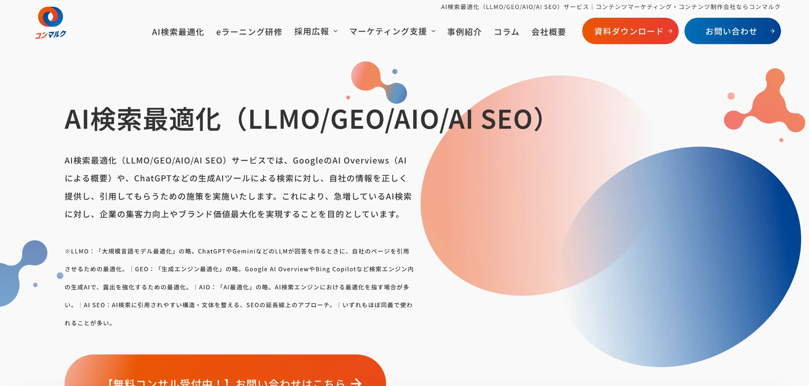
株式会社GIGは、コンテンツマーケティング支援ブランド「コンマルク」を通じて、AI検索最適化サービスを提供している会社です。単なる記事制作にとどまらず、AI検索時代における集客力の向上やブランド価値の向上まで見据えた支援を行っています。
強みは、従来のSEOやコンテンツ制作で培った知見を活かしながら、AI検索向けの対策を段階的に進めやすい点です。診断、コンテンツ制作、Web制作を含む総合的な支援メニューが用意されており、既存のコンテンツマーケティング施策とあわせて相談しやすい体制が整っています。そのため、SEOの延長線上でAI検索対策にも取り組みたい会社や、制作・開発まで含めて一体的に支援してほしい会社に向いている候補といえるでしょう。
参考：株式会社GIG｜AI検索最適化（LLMO/GEO/AIO/AI SEO）サービス
株式会社メディアリーチ
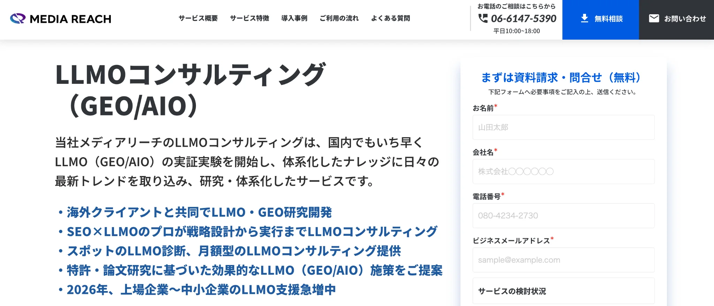
株式会社メディアリーチは、LLMO診断、LLMOコンサルティング、記事制作、研修、サイトリニューアル支援など、支援メニューを幅広く用意している会社です。特徴は、料金と支援内容が比較的わかりやすい点にあります。スポット診断は30万円から、月額コンサルティングは30万円から、記事制作は1本10万円からとなっており、依頼前に費用感を把握しやすい構成です。
価格帯としてはやや高めですが、何にいくらかかるのかを確認しながら検討しやすい会社といえるでしょう。また、施策を提案して終わるのではなく、生成AIでの引用状況や流入分析、ブランド推奨率の確認、Looker Studioによるモニタリングなど、可視化にも力を入れています。そのため、料金と支援範囲を事前に細かく確認したい会社や、診断から記事制作、社内研修まで段階的に導入したい会社に向いています。
参考：株式会社メディアリーチ｜LLMOコンサルティング（GEO/AIOコンサルティング）
株式会社LANY
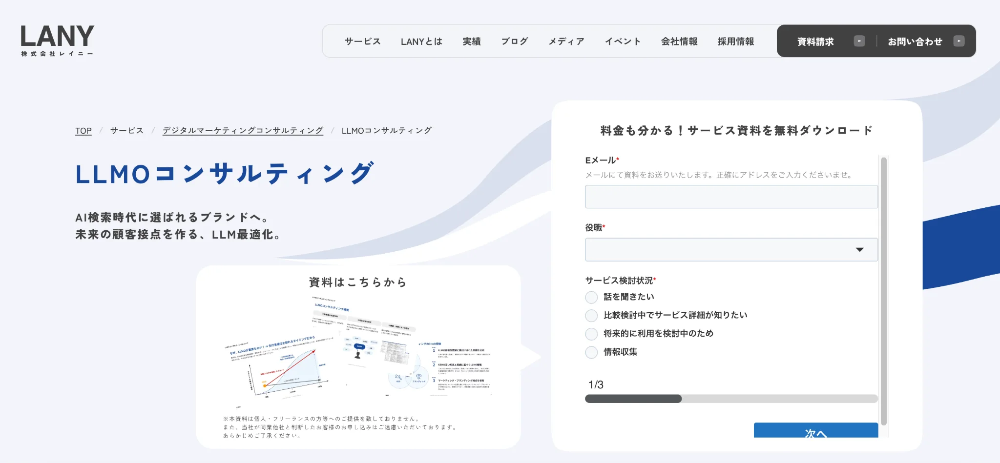
株式会社LANYは、LLMOコンサルティングを通じて、AI検索時代に選ばれるブランドづくりを支援している会社です。場当たり的に施策を打つのではなく、まずは戦略と管理体制を整えたうえで、中長期的に対策を進めていく支援を行っています。
特徴は、要件定義から実行サポート、数値モニタリング、効果検証、定例ミーティングまで、伴走型で支援している点です。そのため、単発の改善提案だけではなく、戦略設計から運用まで継続的に見てもらいたい会社と相性がよいでしょう。特に、LLMOの重要性は感じているものの、何から着手すべきか整理できていない会社や、社内だけで進めるのが難しく、方針設計から実行管理までまとめて支援してほしい会社に向いています。
株式会社CINC
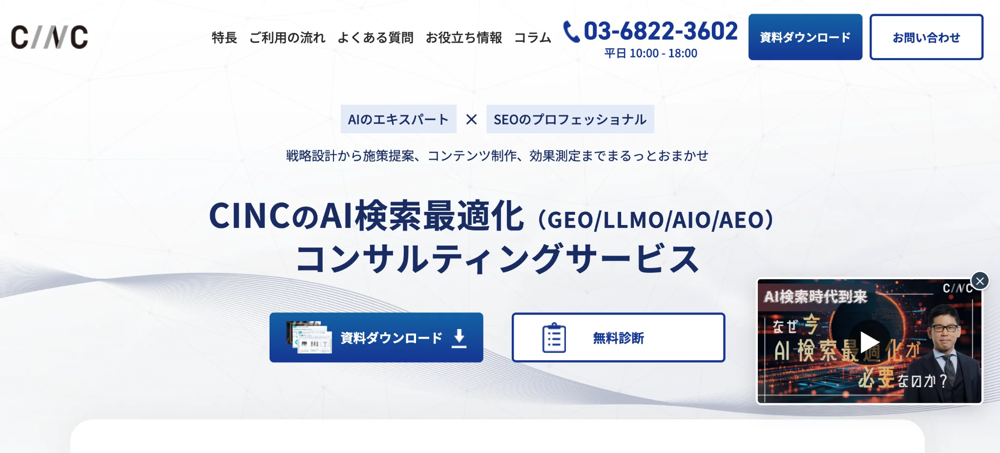
株式会社CINCは、AI検索最適化コンサルティングサービスを提供している会社です。主要な生成AIの回答内容や参照URLを横断的に取得・分析できる独自ツールを強みとしており、複数のAI環境をまたいで現状を把握しやすい点に特徴があります。
施策面では、サイト基盤の整備、自社メディア対策、外部メディア対策まで幅広く対応しています。無料診断では、AI Overviewsでの表示状況や、生成AI上での自社・競合の引用率、AIクローラー向け対策の状況なども確認できるため、現状把握から始めたい会社にとって検討しやすいでしょう。また、長年のSEO・Webマーケティング支援で培った知見を土台にしているため、AI検索対策を単独の施策としてではなく、既存のマーケティング全体とつなげながら進めたい会社にも向いている候補です。
参考：株式会社CINC｜AI検索最適化（GEO/LLMO）コンサルティングサービス
株式会社デジタルアイデンティティ
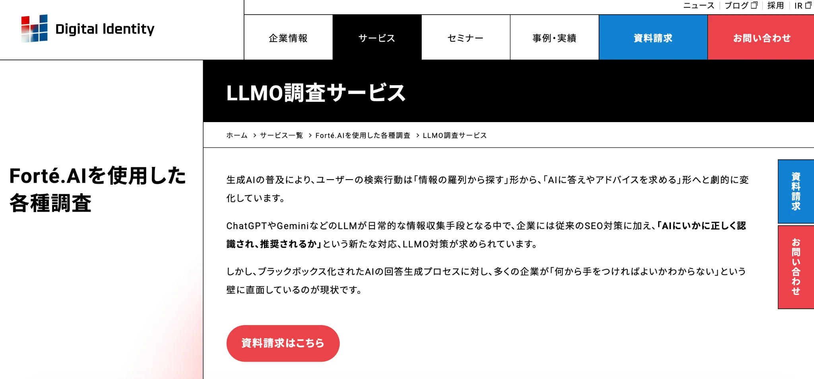
株式会社デジタルアイデンティティは、生成AI時代の検索行動の変化を踏まえ、AIに正しく認識され、推奨されやすい状態をつくる支援を行っている会社です。単に言及率を確認するだけでなく、AIがどの情報を参照しているのか、なぜ競合は推奨されるのに自社は選ばれないのかといった原因分析まで踏み込んでいる点に特徴があります。
強みは、「文脈の特定」「評価基準の定義」「信頼の根拠」の3つを軸に、AIに選ばれやすい情報設計を進めていく独自の考え方にあります。さらに、調査や分析にとどまらず、その後の技術実装まで一貫して支援している点も特徴です。構造化データの実装や内部改善、AIに参照されやすいコンテンツ制作まで対応しているため、調査だけで終わらせず、戦略から実務までまとめて任せたい会社に向いている候補といえるでしょう。
参考：株式会社デジタルアイデンティティ｜LLMO調査サービス
株式会社Faber Company
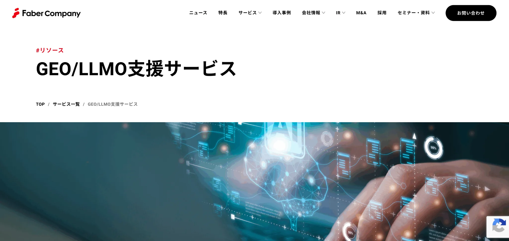
株式会社Faber Companyは、生成AIやLLMによって変化する検索環境の中で、自社ブランドがどのように見られているかを可視化し、露出拡大まで支援している会社です。ChatGPTやGeminiなどで選ばれやすいコンテンツ構造を分析・提案しており、従来のSEOだけでは捉えきれないAI時代の検索体験に対応している点に特徴があります。
強みは、1,000件以上のSEO・ABテスト実績を持つ専門チームの知見を、GEO・LLMO支援にも活かしていることです。これまで培ってきたSEO、LPO、CROの支援実績を土台に、AI検索向けの改善をWebマーケティング全体の延長線上で設計しやすい体制を整えています。そのため、AI最適化まで一体的に進めたい会社に向いている候補といえるでしょう。
参考：株式会社Faber Company｜GEO/LLMO支援サービス
株式会社SEデザイン
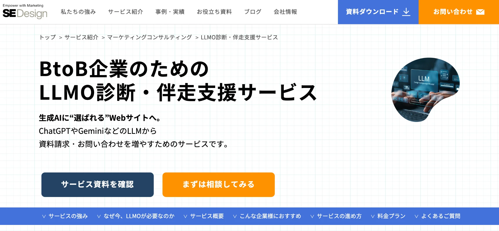
株式会社SEデザインは、BtoB企業向けにLLMO診断・伴走支援サービスを提供している会社です。LLMO診断は50万円からとなっており、まずは現状把握から始めたい企業でも検討しやすい価格帯といえるでしょう。
特徴は、診断だけで終わらず、ヒアリングから現状分析、優先課題の特定、アクションプランの提示、実装までを一気通貫で進めている点です。短期間で方向性を整理し、そのまま改善施策へつなげやすい体制が整っています。また、伴走支援では、定期的な可視化・分析、レポート、次回アクションの提示に加え、要望に応じた施策の実行支援や一次情報コンテンツの制作にも対応しています。そのため、専門性の高いBtoB商材を扱っており、戦略設計から実務までまとめて支援してほしい会社に向いている候補といえるでしょう。
株式会社ジオコード
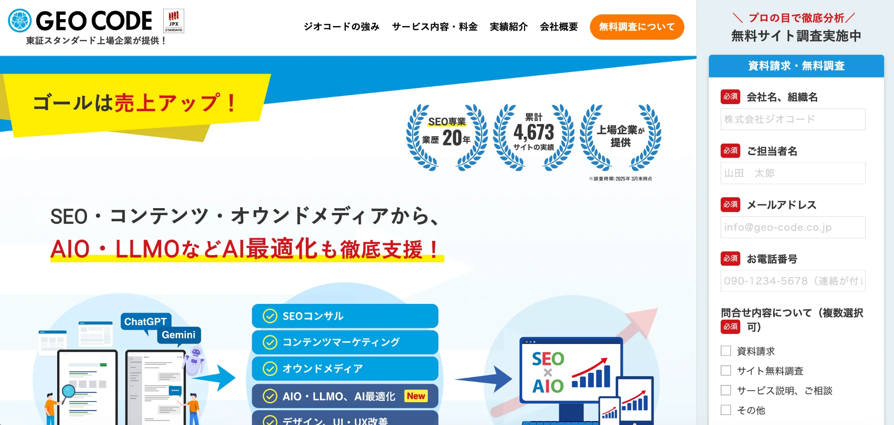
株式会社ジオコードは、SEO対策の中にAIO・LLMOなどのAI最適化を組み込みながら支援している会社です。プランも複数用意されており、予算や課題に応じて施策を組み合わせやすい点が特徴です。
施策内容としては、AIが理解しやすい情報設計、EEAT強化、AI向け構造化データの設計・実装支援、一次情報の組み込み、競合調査、外部権威サイトへの情報連携支援などに対応しています。さらに、SEO対策では戦略立案からサイトへの反映・実装まで一貫して支援しており、エンジニアによる直接実装にも対応しています。そのため、提案だけで終わらず、実務までまとめて任せたい会社に向いている候補です。
参考：株式会社ジオコード｜SEO対策・AIO・LLMOなどAI最適化も徹底支援
サクラサクマーケティング株式会社
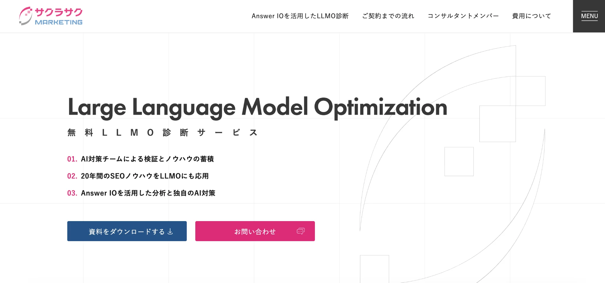
サクラサクマーケティング株式会社は、AI対策チームによる検証体制と、SEO専業として培ってきた20年のノウハウを強みにしている会社です。Answer IOを活用した分析にも対応しており、AI検索で自社がどのように見られているかを多角的に把握しやすい点に特徴があります。
診断では、AI経由の流入状況の把握、重要プロンプトの洗い出し、ChatGPT・Gemini・Perplexityなどでの引用状況調査、競合比較、改善方針の提示まで幅広く行っています。そのため、まずはAI検索における自社の現状を可視化したい会社にとって、検討しやすい候補といえるでしょう。特に、SEOの土台はあるものの、AI時代に向けて何から対応すべきか整理できていない会社や、無料診断から比較検討を始めたい会社に向いています。
参考：サクラサクマーケティング株式会社｜無料LLMO診断サービス
LLMO対策会社に依頼するメリット
LLMO対策会社に依頼するメリットは、AIに拾われやすい情報設計を、場当たり的ではなく全体設計として進めやすくなることです。LLMO対策の基本でも触れたように、AIに引用されるには、単に記事を増やすだけでは足りません。どのテーマを先に作るか、どのページで一次情報を受け止めるか、比較表やFAQをどこに置くかまで整理しながら進める必要があります。
さらに、社内だけでは気づきにくい改善点を洗い出しやすくなり、施策の優先順位も明確になります。ここでは、LLMO対策会社に依頼することで得られる主なメリットを、設計・改善・運用の観点から整理して解説します。
AIに引用されやすい設計をまとめて任せられる
AIに拾われやすくするには、質問に対して何をどの順番で答えるか、見出しの切り方は適切か、根拠や比較情報がページ内でわかりやすく整理されているかまで含めて設計する必要があります。Googleも、AI検索で見つけられる前提として、通常の検索と同じく、アクセス可能でインデックス可能なページであることを重視しています。
AI 検索エクスペリエンスでは、ユーザーがより複雑で具体的な質問や、さらなる理解を求めて追加質問を重ねる傾向があります。こうしたニーズに応えるコンテンツを制作することが、成功へとつながる道です。
出典：Google Search Central Blog｜Google 検索の Google AI エクスペリエンスでコンテンツのパフォーマンスを高めるための主な方法
LLMO対策会社に依頼すると、この設計をページ単位ではなく、サイト全体の流れの中でまとめて進めやすくなります。どのテーマを先に作るべきか、どのページを一次情報の受け皿にするべきか、どこに比較表やFAQを置くべきかまで整理したうえで進められるため、場当たり的な更新になりにくいのが強みです。
社内で試行錯誤を繰り返すより、最初から設計済みの状態で着手しやすくなります。
自社だけでは見つけにくい改善点を洗い出せる
AIで引用されない理由は、記事数が少ないからとは限りません。例えば、次のような細かな要因が積み重なっていることも多いです。
- 見出しが曖昧で質問に正面から答えていない
- 情報が抽象的で比較しにくい
- ページ同士で役割が重複している
- 重要な内容がテキストとして整理されていない
こうした問題は、社内では見慣れてしまって気づきにくくなります。GoogleのAI検索向けの考え方でも、有用性や独自性があるかどうかが土台になります。
外部のLLMO対策会社に依頼するメリットは、この見落としを第三者の視点で洗い出しやすいことです。外部の支援会社が入ることで、社内では当たり前すぎて見落としていた情報の欠けや、比較検討時に不足しやすい論点を洗い出しやすくなります。
複数のAI検索面を前提に施策を組みやすい
いまの情報流通は、Googleだけ見ていれば十分という状態ではありません。GoogleはAI Overviewsを広げ、OpenAIはChatGPT searchを一般公開し、MicrosoftもCopilotやBingのAI回答を強化しています。
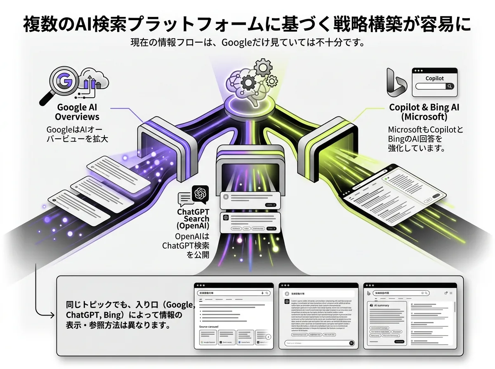
ユーザーが同じテーマを調べる場合でも、入口がGoogleなのか、ChatGPTなのか、Bing系AIなのかで、見られる情報の並び方や参照のされ方は変わります。
LLMO対策会社に依頼すると、この複数の入口を前提にして、どのテーマで露出を狙うかを整理しやすくなります。たとえば、指名系の情報を厚くするページ、比較検討に強いページ、AIが要点を拾いやすいページを役割ごとに分けて設計しやすくなります。
記事制作から改善までを短期間で進めやすい
LLMO対策は、記事を1本作って終わりではなく、公開後の調整まで含めて回していくことが重要です。実際には、想定していた質問に十分答えられていない、比較情報が弱い、見出しの切り方が曖昧といった課題が、公開後に見えてくることも少なくありません。そのたびに構成を見直し、追記や再設計を進める必要があります。
LLMO対策会社に依頼すると、こうした制作と改善を分断せずに進めやすくなります。構成案の作成、記事制作、公開後の改善提案までを一連の流れで進められるため、社内で担当を分けて都度調整するよりも、スピード感を持って動きやすいのが強みです。特に、早い段階で複数ページを整えたい企業にとっては、短期間で形にしやすい点が大きなメリットです。
社内工数を抑えながら対策を継続しやすい
LLMO対策を社内だけで進めようとすると、テーマ選定、構成作成、執筆、確認、改善まで多くの工数がかかります。通常業務と並行して進める場合、どうしても更新が後回しになりやすく、最初に数本作って止まってしまうケースも珍しくありません。
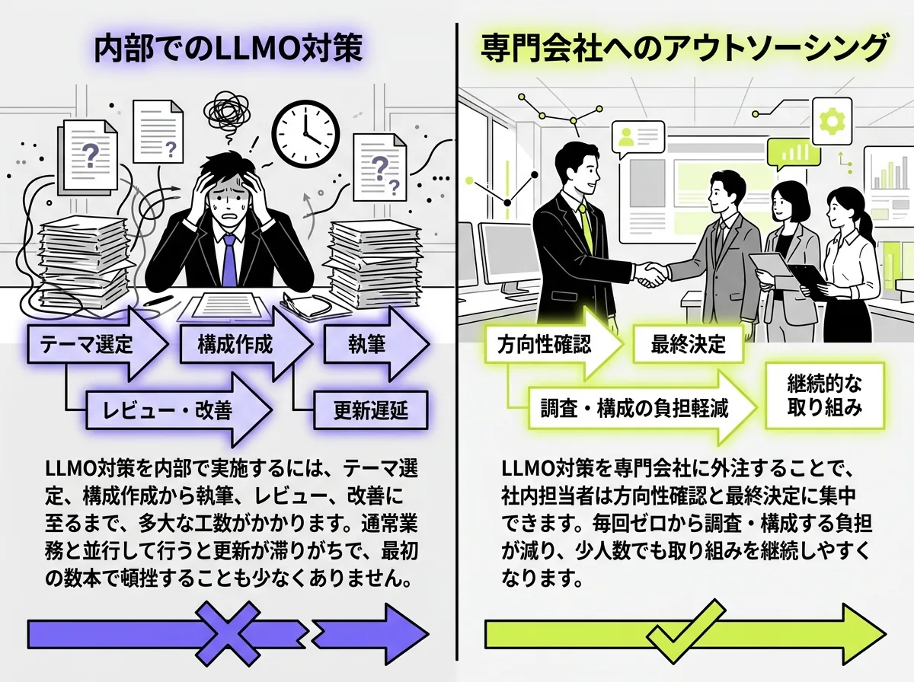
LLMO対策会社に依頼すれば、社内は方向性の確認や最終判断に集中しやすくなります。毎回ゼロから調査や構成を考える負担が減るため、限られた人数でも施策を続けやすくなります。
特に、専任の担当者を置きにくい中小企業や少人数の会社では、社内工数を抑えながら継続できる点は大きな利点です。まずは小さく試したい場合は、格安LLMO代行の比較記事もあわせて確認しておくと、支援範囲と費用感を整理しやすくなります。
成果につながる優先順位で施策を進めやすい
LLMO対策では、思いついたテーマから順に記事を増やしても、成果に結びつくとは限りません。先に整えるべきなのは、AIが参照しやすい基本ページなのか、比較検討で使われやすいページなのか、指名検索に対応するページなのかを見極める必要があります。順番を間違えると、制作本数のわりに露出や引用につながりにくくなります。
LLMO対策会社に依頼すると、成果に近いテーマから優先的に着手しやすくなります。どのページが土台になり、どの情報を先に整えるべきかを整理したうえで進められるため、無駄な制作を減らしやすいからです。限られた予算や期間の中でも、成果につながる順番で施策を組み立てやすくなるのは、外部に依頼する大きなメリットといえます。
参考：Google Search Central Blog｜Google 検索の Google AI エクスペリエンスでコンテンツのパフォーマンスを高めるための主な方法
LLMO対策会社に依頼する際の注意点
LLMO対策会社は、うまく活用すればAI検索への対応を進めやすくなります。ただし、進め方を誤ると期待していた成果につながらないこともあります。ここでは、依頼前に押さえておきたい注意点を2つに整理します。
丸投げ前提で考えない
LLMO対策会社に依頼するときは、完全に丸投げできる前提で考えないほうが安全です。LLMO対策では、会社の強み、実績、提供サービス、顧客像、よくある質問など、自社しか出せない情報が多くあります。これらが不十分なままだと、どれだけ外部会社が記事を作っても、情報の厚みが出にくくなります。
また、AI検索で比較対象になりやすいテーマほど、一次情報や現場感のある情報が重要です。外部会社に任せる部分と、自社が提供すべき情報を分けて考える必要があります。たとえば、構成設計や文章化、競合整理は外部に任せつつ、サービスの実態や実績、事例、提供範囲の確認は自社で協力する、といった進め方のほうが成果につながりやすいです。
成果の見方を事前にすり合わせる
LLMO対策は、SEOのように単純な順位だけで成果を判断しにくい側面があります。そのため、契約前に「何をもって成果とみなすか」をすり合わせておくことが重要です。ここが曖昧なまま進むと、依頼側は問い合わせ増加を期待していたのに、支援側は記事公開本数を成果として考えていた、といったズレが起こりやすくなります。
たとえば、AI上での出現確認、引用されたURL、比較系質問での掲載状況、指名検索の変化、サービスページへの流入、問い合わせへの寄与など、見方はいくつかあります。もちろん、短期間ですべてが大きく変わるとは限りませんが、少なくとも「何を確認しながら進めるのか」は共有しておくべきです。支援範囲が絞られるプランほど、なおさら成果の見方を最初に合わせておくことが失敗防止につながります。
LLMO対策会社に関するよくある質問
ここでは、LLMO対策会社を検討する際によくある疑問をまとめます。料金感やSEO会社との違い、内製と外注の考え方など、依頼前に気になりやすいポイントを整理しておきたい方は参考にしてください。
LLMO対策会社とSEO会社は何が違いますか
大きな違いは、主な成果地点です。SEO会社は、検索結果での流入拡大や順位改善が目的です。LLMO対策会社は、ChatGPTやGoogleのAI機能、Perplexityのような回答型サービスの中で、自社情報が見つかりやすく、参照されやすく、比較候補として扱われやすい状態を目指します。
月額5万円前後でも依頼できますか
依頼できるケースはあります。実際に、株式会社AIMAは公式サイトで月額5万円のLLMO支援を案内しています。一方で、公開情報ベースでは、LLMO対策の月額相場は10万円〜30万円以上とされる例も多く、5万円前後は相場の中心よりかなり低い価格帯です。
そのため、月額5万円前後で依頼する場合は、記事制作だけに絞るのか、質問設計まで含むのか、確認作業まで見るのかなど、支援範囲をしっかり確認することが大切です。特に低価格帯では、対応範囲が明確な会社を選ばないと、「思っていたよりやってもらえなかった」というズレが起きやすくなります。
小規模企業でも依頼する意味はありますか
あります。重要なのは、公開ページの情報がきちんと読めること、検索エンジンにクロール・インデックスされやすいこと、ユーザーに役立つ内容になっていることです。つまり、予算の大きさよりも、今あるサイトのどこを優先的に整えるかのほうが重要です。小規模企業でも、サービスページ、FAQ、比較されやすいテーマの記事など、限られた範囲から整えるだけで前に進める余地があります。
契約前に確認すべきことはありますか
あります。最低限確認したいのは、支援範囲、実装支援の有無、成果の見方、契約期間の4つです。具体的には、記事制作だけなのか、FAQやサービスページ改善まで含むのか、公開後の出現確認や引用確認まで行うのかを確認しておきましょう。
内製と外注はどちらが向いていますか
社内に、方向設計、情報整理、記事やページ改善を継続できる体制があるなら、内製でも進められます。一方で、誰が何を直すか決める時間がない、既存ページの改善まで手が回らない、AI検索での見え方を確認するノウハウがないといった場合は、外注のほうが進めやすいです。
必要に応じて、最初に無料LLMO診断のような現状把握サービスを挟み、どこまでを外注すべきかを整理してから比較に入る進め方も有効です。
まとめ
LLMO対策会社を選ぶときに大切なのは、知名度や料金だけで候補を絞らないことです。同じAI検索最適化をうたっていても、記事制作に強い会社、診断や戦略設計に強い会社、実装まで支援する会社など、支援範囲はかなり異なります。
そのため、自社に足りない施策を埋められるか、自社の体制に合うかという視点で選ぶことが重要です。まずは自社に必要なのが、記事制作なのか、サービスページ改善なのか、FAQ整備なのか、あるいは出現確認や計測体制の整理なのかを明確にし、その課題に合う会社を選ぶことから始めましょう。